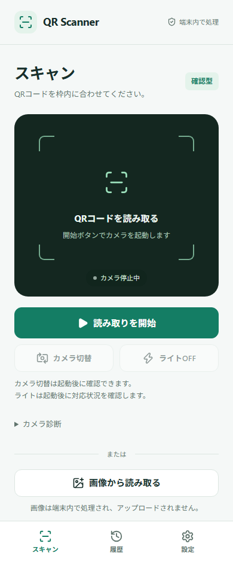

カメラでも、画像でも
カメラをかざして読み取るほか、端末に保存した画像も選べます。前面・背面カメラの切り替えや、対応端末でのライト点灯も利用できます。
カメラ切替・ライトは端末とブラウザの対応状況によります。
いつものブラウザで、すぐに。
カメラでも、画像からでも。
無料・登録不要のオンラインQRコードリーダー。
読み取りから履歴の管理まで、ひとつのアプリで。
アプリストアからのインストールは不要です

かざして、読み取るカメラ・保存画像に対応
あとから、見返す履歴・お気に入り・CSV出力
外出先でも、手軽に準備後はオフラインでも
できること
日々の読み取りに役立つ機能を、シンプルな日本語の画面にまとめました。
カメラをかざして読み取るほか、端末に保存した画像も選べます。前面・背面カメラの切り替えや、対応端末でのライト点灯も利用できます。
カメラ切替・ライトは端末とブラウザの対応状況によります。
結果を確認してから開く「確認型」、URLを開く「自動型」、続けて読み取る「連続型」。設定画面で切り替えられます。
読み取りモードについて読み取った内容は履歴に保存。お気に入り登録、個別・全件削除、CSV出力に対応しています。必要な情報をあとから見返せます。
ダーク・ライトモードを選べます。読み取り成功時の効果音もオン・オフを設定可能。連続型では、同じ内容の重複保存を防ぎます。
効果音の再生可否は利用環境によります。
初回にオンラインで開き、準備が完了したあとは、オフラインでの読み取りや履歴の確認ができます。
読み取った外部サイトを開くときは通信が必要です。
ホーム画面に追加して、PWAとして使うこともできます。いつものアプリのように、アイコンからQR Scannerを開けます。
iPhoneでの追加方法を見るまずは、結果を確認できる「確認型」から。
自動型では不審なURLも確認なしで開く可能性があります。リンク先の安全性は保証されません。
使い方
インストールせずに、ブラウザから始められます。
コード全体が鮮明に写った画像を選んでください。
毎回URLを入力せず、アイコンから起動できます。
追加するのは、この紹介サイトではなくアプリ本体です。メニューの位置や表記はiOSのバージョンによって異なる場合があります。
プライバシー
カメラ映像・選択した画像・読み取り内容は、端末内で処理します。QRコードの解析に、外部の解析APIやアカウント登録は必要ありません。
履歴と設定も、利用している端末のブラウザ内に保存されます。端末間での同期はありません。
アプリの初回取得・更新や、読み取った外部サイトの閲覧には通信が発生します。履歴はブラウザデータの消去などで失われる場合があるため、大切な内容はCSVで保存してください。
よくある質問
料金や対応環境、
データの保存について。
QR Scannerは無料で利用できます。アカウント登録も不要です。アプリの取得・更新や外部サイトの閲覧にかかる通信料は、ご利用の通信契約に従います。
iPhone・Android・パソコンのブラウザでの利用を想定したWebアプリです。JavaScriptを有効にしてください。カメラには対応ブラウザとアクセス許可が必要です。
すべての端末・OS・ブラウザでの動作は保証していません。前面・背面カメラの切替、ライト、効果音、ホーム画面への追加は利用環境によって異なります。カメラが使えない場合は、画像からの読み取りもお試しください。
必要ありません。アプリ本体をブラウザで開けば使えます。対応ブラウザでは、ホーム画面に追加してPWAとして利用することもできます。iPhoneの場合はSafariでの追加手順をご覧ください。
初回にオンラインでアプリを開き、「オフラインで使う準備ができました」と表示されたあとは、オフラインでカメラ・画像の読み取りや履歴の確認ができます。外部サイトを開くには通信が必要です。
ブラウザやOSがキャッシュを消去した場合は、再びオンラインで準備してください。
「読み取りを開始」を押したあと、カメラの利用を許可してください。拒否した場合は、ブラウザのサイト設定や端末の設定でカメラ権限を確認し、もう一度開始します。
別のアプリがカメラを使用している場合は終了してください。解決しない場合は、ブラウザの再起動や「画像から読み取る」をお試しください。
履歴・お気に入り・設定は、利用中の端末のブラウザ内（localStorage）に保存されます。履歴画面から個別・全件削除ができます。アカウントやクラウドでの同期はありません。
ブラウザデータの消去や保存容量の制限などで、履歴が失われる場合があります。大切な履歴はCSV出力で手元に保存してください。
開発について
QR Scannerは、アプリケーション開発の学習を目的に制作しました。
日常の小さな操作を、ブラウザで手軽にできることを目指しています。
この紹介サイトはHTML・CSSで制作しています。